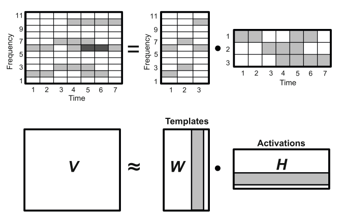

2 Pitch analysis
2.1 Introduction
Pitch analysis is the task of estimating the fundamental frequency of a periodic signal that is the inverse of the period which is defined as “the smallest positive member of the infinite set of time shifts leaving the signal invariant” (Cheveigné and Kawahara 2002). As music signal frequencies vary through time, the pitch analysis is usually performed on a short time frame (window) allowing to express the obtained pitch as a function of time, we will consider henceforth the analysis on a single frame.
Furthermore, the physical model we have considered for the signal formula is based on physical hypotheses. In fact, we considered a signal formed by a perfectly harmonic instrument travelling in a perfectly undisturbed homogenuous medium with no other iterfering waves. Since such conditions are almost never met, we base our analysis on imperfect conditions. Indeed, the recorded signal represents the pressure function at the receptors position. Consequently, the recorder captures the pressure at its position from all surrounding stimuli, recording surrounding noise, resonance effects, and the reflected wave with a certain lag. As a result, we express the observed signal as the sum of the harmonic signal \(\tilde{x}\) and the residual \(z\). (Yeh 2008) \[x(t) = \tilde{x}(t) + z(t)\]
Before we move on, let’s consider the harmonicity of a sound. In the case of perfectly harmonic instrument the frequency of harmonic partials is expressed as a proper multiple of the fundamental frequency \(f_h = h f_0\). However, most musical instruments are not perfectly harmonic, for example the \(h^\text{th}\) harmonic frequency of a vibrating string is given as \[ f_h = h f_0 \sqrt{1 + Bh^2} \quad\text{where}\quad B = \frac{\pi^3 Ed^4}{64l^2T}\] where \(B\) is the inharmonicity factor of the string, \(E\) is Young’s modulus, \(d\) is the diameter of the string, \(l\) is its length and \(T\) is its tension. We refer to such signals as quasi-periodic. Pitch analysis therefore has to take into account the inharmonicity of a signal in the process of estimating its fundamental frequencies in order to prevent cases of false negatives (missed pitches). [source needed]
Pitch analysis deals with both monophonic and polyphonic signals, a monophonic signal is a signal produced by a single harmonic source whereas polyphonic signals have multiple sources, in the case of the latter the task is significantly harder. Nevertheless, pitch estimation methods for both single and multiple sourced harmonics can be classified into two categories: methods that estimate the period in the signal time domain and methods that estimate the \(f_0\) from the harmonic patterns in the signal spectrum.
2.2 Single pitch
Single pitch estimation is based on finding the fundamental frequency of a monophonic sound. The quasi-periodic monophonic signal \(\tilde{x}\) is expressed as \[\tilde{x}(t)=\sum_{h=1}^{\infty} A_h\cos(2\pi f_0 t + \varphi_h)\] For practical reasons, a finite number of harmonic partials \(H\) is used to approximate the signal. \[\tilde{x}(t)\approx\sum_{h=1}^{H} A_h\cos(2\pi f_0 t + \varphi_h)\]
The estimation of \(f_0\) can be approached in two different ways: by analysing the time function \(x(t)\) or by analysing the signal spectrum \(X(f)\).
2.2.1 Time domain
Time domain methods analyse the repetitiveness of the wave by comparing the signal with a delayed version of itself. This comparison is achieved using special functions that represent the pattern similarity or dissimilarity as a function of the time lag \(\tau\).
We will study and compare the functions that appear the most in litterature.
Autocorrelation function
The autocorrelation function (ACF) comes immediately to mind. By definition, autocorrelation is the similarity function between observations. Given a discrete signal of \(N\) samples, the autocorrelation function is defined as \[r[\tau] = \sum_{t=1}^{N-\tau} x[t]x[t+\tau]\]
The value is of the ACF is at a local maximum when the lag is equal to the signal’s period or its multiples. Autocorrelation is sensitive to structures in signals, making it useful to applications of speech detection. However, in the case of music signals, resonance structures appear hence the need for a better adapted function.
Difference function
The Average Magnitude Difference Function (AMDF) (Ross et al. 1974) is the average unsigned difference between \(x(t)\) and \(x(t+\tau)\). \[d_{\text{AM}}[\tau] = \frac{1}{N} \sum_{t=1}^{N-\tau} \left\lvert x[t]-x[t+\tau]\right\rvert\] The difference function is at its local minima for lags equal to proper multiples of the signals period. AMDF is more adapted than autocorrelation for applications in music processing.
Squared difference function
The Squared Difference Function (SDF) is very similar to AMDF, it accentuates however the dips at the signals period therefore indicate local extrema more clearly. \[d[\tau] = \sum_{t=1}^{N-\tau}(x[t]-x[t+\tau])^2\]
YIN algorithm (Cheveigné and Kawahara 2002) employs the SDF as an auxiliary function for calculating the cumulative mean normalized difference function that divides SDF by its average over shorter lags and starts at 1 rather than 0 (in the case of SDF and AMDF); it tends to stay large at short lags and drops when SQD falls under its average.
\[d_{\text{YIN}}[\tau] = \begin{cases} 1 &\text{if}~\tau = 0\\ d[\tau] / \frac{1}{\tau}\sum\limits_{t=0}^{\tau} d[t] &\text{otherwise} \end{cases}\]
from muallef.io import AudioLoader
from muallef.plot import diff_functions as df
cello = AudioLoader('samples/instrument_single/cello_csharp2.wav')
cello.cut(start=2, stop=2.06)
df.time_domain_plots(cello.signal, cello.sampleRate, pitch=69.3)
2.2.2 Spectral domain
Fourier transform is the most adapted mathematical tool for analysing periodicity in functions. The transform produced a complex function of frequency, where the magnitude of the transform attains its local maxima at the signal’s frequency and its harmonics.
Spectral domain methods analyse the magnitude and/or the phase of the fourier transform of the signal, which generally gives better results. Nevertheless, similar comparison functions are employed in order to get the fundamental frequency.
Spectral autocorrelation
Autocorrelation measures repititive patterns, since harmonics appear at almost fixed frequency intervals, ACF allows to identify harmonic partials. (Lahat, Niederjohn, and Krubsack 1987) The autocorrelation is applied to the spectrum of the signal, that is the magnitude of the fourier transform. The function attains its local maxima at frequency shifts that are multiples of \(f_0\), otherwise the function is attenuated since the partial peaks are not well aligned.
For a spectrum \(S[f]=\left\lvert X[f]\right\rvert\) with \(K\) spectral bins \[R[f] = \sum_{k=1}^{K-f} S[k]S[k+f]\]
Harmonic sum
A frequency histogram represents the number of occurrences of each frequency, it does not however reflect the amplitudes of the harmonics of frequencies. Schroeder proposes to weight the contribution of each harmonic to the histogram with a monotonically increasing function of its amplitude, this is done using log compression where spectral harmonic bins are compressed with a logarithm. Finally, Schroeder proposed two functions of frequency that sum the compressed weighted histogram. (Schroeder 1968)
- Harmonic sum: \[\Sigma(f)=\sum_{m=1}^M 20\log_{10}S(nf)\]
- Harmonic product: \[\Sigma'(f)=20\log_{10}\sum_{m=1}^M S(nf)\]
The sum inside the logarithm in the harmonic product can be viewed as a product because of the properties of the logarithm function.
oboe = AudioLoader('samples/instrument_single/oboe_a4.wav')
oboe.cut(start=0.5)
df.spectral_plots(oboe.signal[:4096], oboe.sampleRate, pitch=440)
Spectral YIN
The spectral YIN method (Brossier 2006) is an optimized version of YIN’s algorithm computed in the frequency domain. The square difference function is defined over spectral magnitudes \[\hat{d}(\tau) = \frac{2}{N} \sum\limits_{k=0}^{\frac{N}{2}+1} \left\lvert\left(-e^{2\pi jk\tau/N}\right) X[k]\right\rvert^2\]
2.2.3 Application Example
I have recorded myself playing Vittorio Monti’s violin piece “Czardas” which is relatively complex musically since it features tonal glissando (continuous slides) and is grace notes (short time notes).
We test pitch estimation using the YIN method in the time domain as well as the spectral domain.
from muallef.pitch import MonoPitch
from muallef.util.units import Hz_to_MIDI
czardas = AudioLoader('samples/monophonic/czardas_cut.wav')
yin = MonoPitch(czardas.signal, czardas.sampleRate, method='yin')
yin_f0 = yin()
yin_conf = yin.get_confidence(normalize=True)
yinfft = MonoPitch(czardas.signal, czardas.sampleRate, method='yinfft')
yinfft_f0 = yinfft()
yinfft_conf = yinfft.get_confidence(normalize=True)
time = czardas.time(len(yinfft_f0))
fig, ax = plt.subplots(2, 1, sharex=True)
fig.set_figheight(6)
_ = fig.suptitle("Single Pitch Estimation using YIN method", fontsize=16)
_ = ax[0].set_title("$f_0$ of Monti's \"Czardas\" on violin")
_ = ax[0].scatter(time, yin_f0, c='blue', s=10*yin_conf, label='YIN')
_ = ax[0].scatter(time, yinfft_f0, c='red', s=10*yinfft_conf, label='Spectral YIN')
_ = ax[0].set_ylim(0, 600)
_ = ax[0].set_ylabel('Estimated $f_0$ (Hz)')
_ = ax[0].legend()
_ = ax[1].set_title("Pitch of Monti's \"Czardas\" on violin")
pitch = np.round(Hz_to_MIDI(yinfft_f0))
_ = ax[1].scatter(time, pitch, s=10*yinfft_conf)
_ = ax[1].set_ylim(0, 100)
_ = ax[1].set_ylabel('Estimated pitch (MIDI)')
_ = ax[1].set_xlabel('Time (s)')
plt.show()
As expected, \(f_0\) values were successfuly detected including fuzzy glissando pitches and grace notes.
2.3 Multiple pitch
In polyphonic music analysis, we are interested in detecting the fundamental frequences for concurrent signals, the signals can be produced by several instruments simultanuously.
There are generally two approaches to this problem: iterative estimation and joint estimation. In iterative estimation, the most prominent \(f_0\) is extracted at each iteration until no additional \(f_0\) can be estimated. Generally, iterative estimation models tend to accumulate errors at each iteration step, they are however computationally cheap. Whereas joint estimation methods evaluation \(f_0\) combinations which leads to more accurate estimates, however the computational cost is significantly increased.(Benetos et al. 2013)
We establish the formalism of the task analogously to a single pitch harmonic signal. A multi-pitch harmonic signal \(\tilde{x}(t)\) can be expressed as the sum of \(M\) harmonic signals. \[\tilde{x}(t)=\sum_{m=1}^M \tilde{x}_m(t)\] where \(\tilde{x}_m(t)\) is a harmonic monophonic signal similar to signals we’ve seen so far. It follows that \[x(t)\approx \sum_{m=1}^{M} \sum_{h=1}^{H_m} A_{m,h} \cos(2\pi h f_{0,m}t + \varphi_{m,h}) + z(t)\]
2.3.1 Harmonic Amplitudes Sum
A. Klapuri (2006) proposes a robust pipeline for estimating fundamental frequencies in polyphonic music signals. The method looks for \(f_0\) that maximizes a frequency strength over candidate frequencies in a whitened spectrum.
- Spectral whitening: different sources can have
different timbral information in the signal spectrum.
In order to detect analyse the frequencies of the different
sources, Klapuri proposes suppressing the timbral
information prior to detecting dominant frequencies
in the spectrum.
This process is done by a sequence of transformations:
- Apply bandpass filter to the spectrum \(X(f)\) to obtain center frequencies \(c_b\) where \(b\) is the subband index of the filtered spectrum. Each subband has a triangular power response \(H_b(f)\) such that \(\mathop{\mathrm{supp}}\left(H_b(k)\right) = [c_{b-1},c_{b+1}]\).
- Calculate standard deviations \(\sigma_b\) within subbands \[\sigma_b=\left(\frac{1}{K}\sum_f H_b(f)\left\lvert X(f)\right\rvert^2\right)^{1/2}\] where \(K\) is the number of frequency bins of the Fourier transform.
- Calculate compression coefficients \(\gamma_b=\sigma_b^{\nu-1}\) where \(\nu\) is the whitening parameter, the proposed value is \(\nu=0.33\).
- Interpolate \(\gamma(f)\) for all frequency bins \(f\) from \(\gamma_b\).
- Finally calculate the whitened spectrum \(Y(f)\) by weighting the input spectrum by the obtained compression coefficients \(Y(f)=\gamma(f)X(f)\).
- Salience function: strength of \(f0\) candidates is evaluated using a salience function \(s\) that calculates the weighted sum of harmonic partials’ amplitudes, similarly to Schroeder’s function (1968). \[s(\tau) = \sum_{h=1}^H g(\tau,h)\left\lvert Y(hf_{\tau})\right\rvert\] where \(f_{\tau}=f_s/\tau\) is the \(f_0\) candidate corresponding to the period \(\tau\) and \(g(\tau,h)\) is the weight of the \(h\) partial of period \(\tau\).
- Finally the frequencies are estimated iteratively or jointly by determining \(f_0=\mathop{\mathrm{argmax}}_{f} s(f)\). In iterative evaluation, the found \(f_0\) is removed from the residual spectrum and the process is repeated until the spectrum is flat.
Application Example
We test Klapuri’s pipeline on Beethoven’s infamous piano piece “Für Elise”.
from muallef.pitch import MultiPitch
from muallef.util.units import Hz_to_MIDI
fur_elise = AudioLoader('samples/polyphonic/furElise.wav')
fur_elise.cut(stop=5)
klapuri = MultiPitch(fur_elise.signal, fur_elise.sampleRate, method='klapuri')
pitch = Hz_to_MIDI(klapuri())
time = fur_elise.time(pitch.shape[1])
fig, ax = plt.subplots()
fig.set_figheight(8)
_ = fig.suptitle("Multi-pitch estimation using Klapuri's iterative method", fontsize=16)
_ = ax.set_title("Piano roll of Beethoven's \"Für Elise\"")
for m in range(pitch.shape[0]):
_ = ax.scatter(time, np.round(pitch[m]), s=5)
_ = ax.set_xlabel('Time (s)')
_ = ax.set_ylabel('Estimated Pitch (MIDI)')
_ = ax.set_ylim(30, 80)
plt.show()
The resulting piano-roll shows a generally decent representation of the piece as the percentage of false positives remains relatively low.
2.3.2 Spectral factorisation
Non-negative Matrix Factorisation (NMF) is a well-established technique applied to several problems, in (Smaragdis and Brown 2003) a method is proposed for applying NMF to the signal spectrum.
\[\boldsymbol{V}\approx\boldsymbol{W}\boldsymbol{H}\]
The method consists of factorising a non-negative matrix \(\boldsymbol{V}\in\mathbb{R}_+^{K\times N}\) into the product of two non-negative matrices \(\boldsymbol{W}\in\mathbb{R}_+^{K\times R}\) and \(\boldsymbol{H}\in\mathbb{R}_+^{R\times N}\) where \(R\) is the factorisation rank with \(R<<K\), given \(N\) time frames and \(K\) spectral bins. The matrix \(\boldsymbol{W}\) is the template matrix that extracts the features of \(\boldsymbol{X}\) into \(R\) classes referred to as templates. The matrix \(\boldsymbol{H}\) is the activation matrix which represents the activation time of each template.
In the application of over music signal spectrums, \(\boldsymbol{V}={\boldsymbol{X}}^{\top}\) where \(\boldsymbol{X}\in\mathbb{R}_+^{N\times K}\) is the spectrogram of the signal which is the magnitude of the STFT of the signal. The factorisation templates correspond to pitch classes, where in the case of most instruments or music ensembles is less than \(R=100\). The template matrix \(\boldsymbol{W}\) corresponds to spectral bases for each pitch component and the activation matrix \(\boldsymbol{H}\) represents pitch activity across time.

The problem is formulated as a non-convex optimisation problem
\[(\boldsymbol{W},\boldsymbol{H}) = \mathop{\mathrm{argmin}}_{\boldsymbol{W},\boldsymbol{H}>0} \left\lVert\boldsymbol{V}-\boldsymbol{W}\boldsymbol{H}\right\rVert\]
The implemented cost function \(C=\left\lVert\boldsymbol{V}-\boldsymbol{W}\boldsymbol{H}\right\rVert\) is the euclidean norm \(L_2\). The matrices \(\boldsymbol{V}\) and \(\boldsymbol{H}\) are decomposed into \(N\) column vectors, \(\boldsymbol{V}=(v_1,\ldots,v_N)\) and \(\boldsymbol{H}=(h_1,\ldots,h_N)\), which implies \(\forall i\in\left\{1,\ldots,N\right\},v_i = \boldsymbol{W}h_i\). By imposing the orthogonality constraint \(\boldsymbol{H}{\boldsymbol{H}}^{\top}=I\), we obtain the K-means clustering property. The values of \(\boldsymbol{W}\) and \(\boldsymbol{H}\) can be initialized randomly and are therefore learned iteratively.
Reinforcing a sparsity constraint was proposed in (Cont 2006) for spectral factorisation since pitch templates correspond to discrete frequency values. Moreover, a subset of pitch templates are activated simultanuously in a musical piece, especially in the case of a piano piece.
Finally, single pitch estimation is performed on rows of \(\boldsymbol{H}\).
Unfortunally, our implementation of this algorithm did not give successful results, we use the API provided in for testing (Müller 2015).
from muallef.plot.nmf import plot_matrix, plot_NMF_factors
from muallef.pitch.nmf import NMF
import numpy as np
import matplotlib.pyplot as plt
# use stft from scipy instead of librosa
# from librosa import stft
from scipy.signal import stft as sp_stft
def stft(x, n_fft=2048, hop_length=None):
noverlap = n_fft // 2 if hop_length is None else n_fft - hop_length
return sp_stft(x, nperseg=n_fft, noverlap=noverlap)[2]
fs = fur_elise.sampleRate
x = fur_elise.signal
N_fft = 2048
H_fft = 1024
X = stft(x, n_fft=N_fft, hop_length=H_fft)
V = np.log(1 + np.abs(X))
freq_max = 2000
# plot input spectrogram
_ = plot_matrix(V, Fs=fs/H_fft, Fs_F=N_fft/fs, figsize=(8, 5))
_ = plt.ylim([0, freq_max])
plt.show()
K = V.shape[0]
N = V.shape[1]
R = 30
# Initialize and plot random matrices W, H
W_init = np.random.rand(K,R)
H_init = np.random.rand(R,N)
plot_NMF_factors(W_init, H_init, W_init.dot(H_init), fs, N_fft, H_fft, freq_max)
# Calculate and plot NMF decomposition
W, H, V_approx, V_approx_err, H_W_error = NMF(V, R, W=W_init, H=H_init, L=200, norm=True)
plot_NMF_factors(W, H, W.dot(H), fs, N_fft, H_fft, freq_max) 
V error approximation = 0.011133112314093932The obtained \(\boldsymbol{V}\) matrix is close to the input spectrogram, the matrices are all sparse as expected. Nevertheless, the matrices are fuzzy therefore pitch templates and their activations are not clear. The NMF factorisation as is, might not render better results than Klapuri’s. In fact most of pitch templates correspond to multiple note mixtures, the results can be enhanced by initializing pitch-informed constraints where \(\boldsymbol{W}\) is initialized to MIDI pitch classes. It can however be very useful method for separating different sound sources.
References
Benetos, Emmanouil, Simon Dixon, Dimitrios Giannoulis, Holger Kirchhoff, and Anssi Klapuri. 2013. “Automatic Music Transcription: Challenges and Future Directions.” Journal of Intelligent Information Systems 41 (December). https://doi.org/10.1007/s10844-013-0258-3.
Brossier, Paul M. 2006. Automatic Annotation of Musical Audio for Interactive Applications.
Cheveigné, Alain de, and Hideki Kawahara. 2002. “YIN, a Fundamental Frequency Estimator for Speech and Music.” The Journal of the Acoustical Society of America 111 (4): 1917–30. https://doi.org/10.1121/1.1458024.
Cont, Arshia. 2006. “Realtime Multiple Pitch Observation Using Sparse Non-Negative Constraints,” 6.
Klapuri, Anssi. 2006. “Multiple Fundamental Frequency Estimation by Summing Harmonic Amplitudes,” 6.
Lahat, M., Russell J. Niederjohn, and David A. Krubsack. 1987. “A Spectral Autocorrelation Method for Measurement of the Fundamental Frequency of Noise-Corrupted Speech.” IEEE Trans. Acoustics, Speech, and Signal Processing. https://doi.org/10.1109/TASSP.1987.1165224.
Müller, Meinard. 2015. Fundamentals of Music Processing - Audio, Analysis, Algorithms, Applications. Springer. https://www.audiolabs-erlangen.de/fau/professor/mueller/bookFMP.
Ross, M., H. Shaffer, A. Cohen, R. Freudberg, and H. Manley. 1974. “Average Magnitude Difference Function Pitch Extractor.” IEEE Transactions on Acoustics, Speech, and Signal Processing 22 (5): 353–62. https://doi.org/10.1109/TASSP.1974.1162598.
Schroeder, Manfred R. 1968. “Period Histogram and Product Spectrum: New Methods for Fundamental-Frequency Measurement.” The Journal of the Acoustical Society of America. https://doi.org/10.1121/1.1910902.
Smaragdis, P., and J.C. Brown. 2003. “Non-Negative Matrix Factorization for Polyphonic Music Transcription.” In 2003 IEEE Workshop on Applications of Signal Processing to Audio and Acoustics (IEEE Cat. No.03TH8684), 177–80. New Paltz, NY, USA: IEEE. https://doi.org/10.1109/ASPAA.2003.1285860.
Yeh, Chunghsin. 2008. “Multiple Fundamental Frequency Estimation of Polyphonic Recordings,” 153.